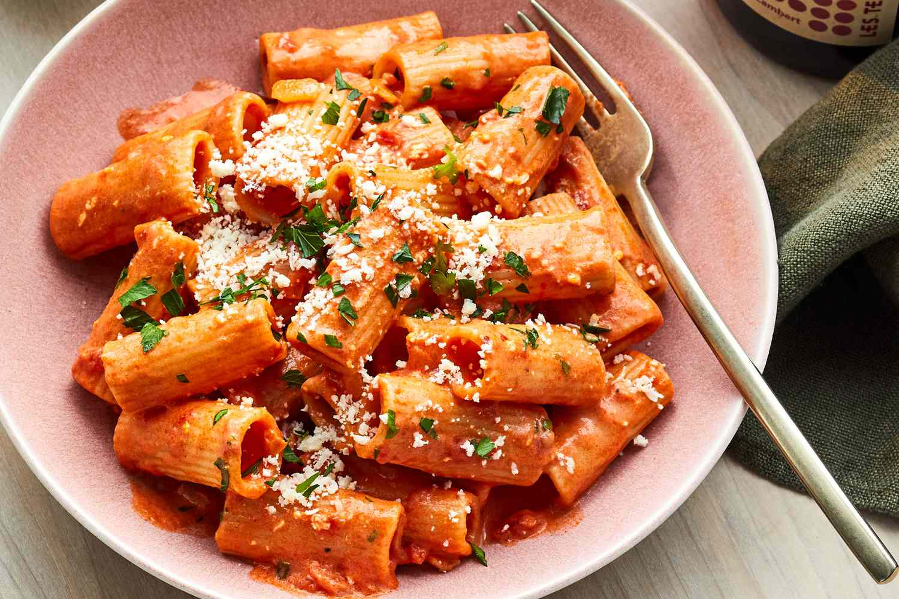
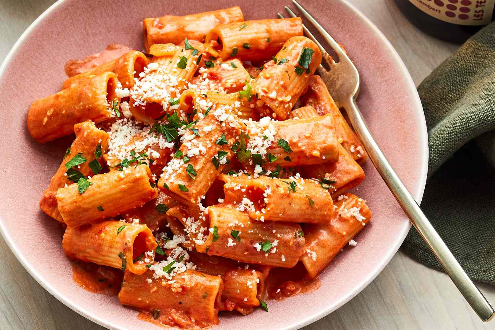

College Meal Recipes
 


ABOUT OUR COLLEGE MEAL
This website shows the recipes for a 3 course meal. The appetizer consists of a caprese salad, the main course is penne alla vodka dish, and the dessert is chocolate chip cookies.
Top Three Reasons We picked Our Topic
- A. As college students, we recognize the importance of cooking to be cost efficient and stay healthy.
- B. We both have a passion for Italian food! These three dishes are our favorite meals to cook.
- C. We would love to help other students learn to cook using easy-to-follow along recipes.
- :)